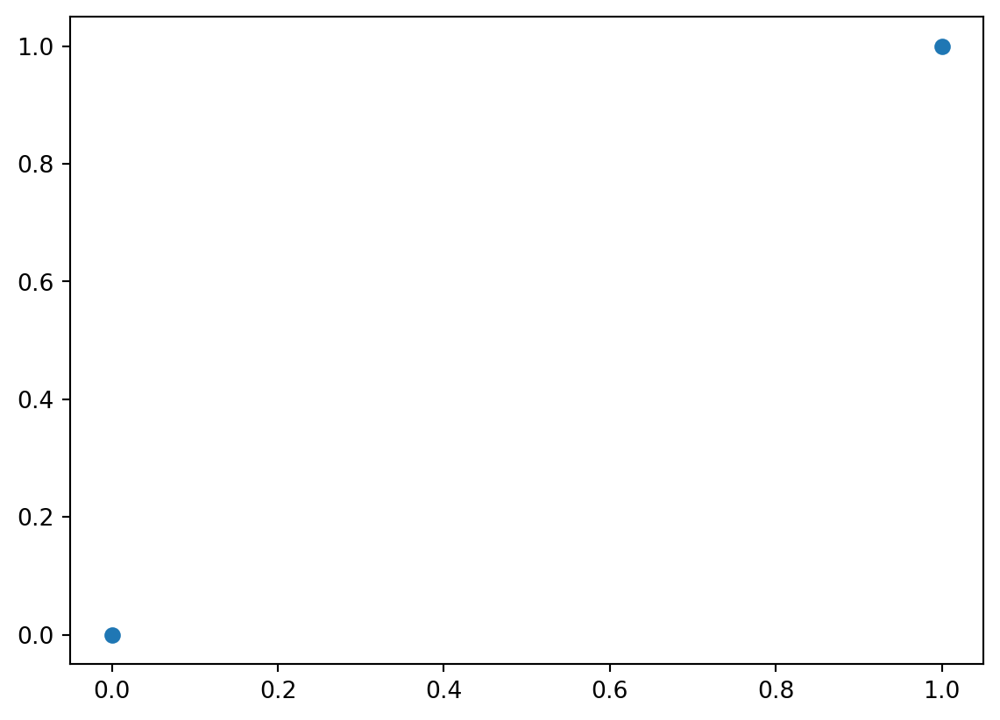
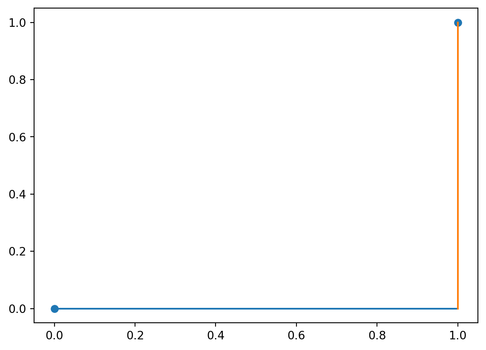
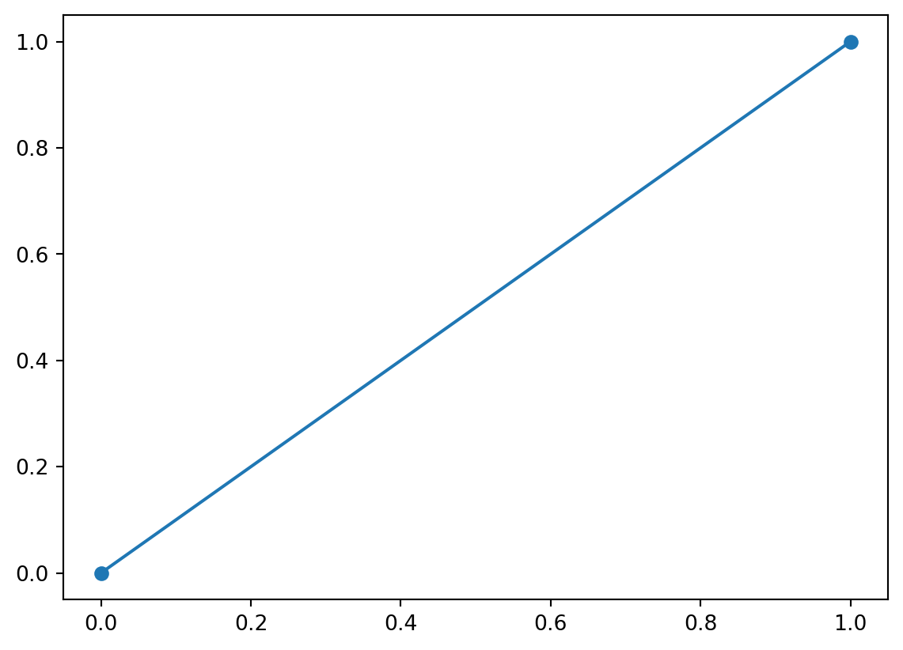
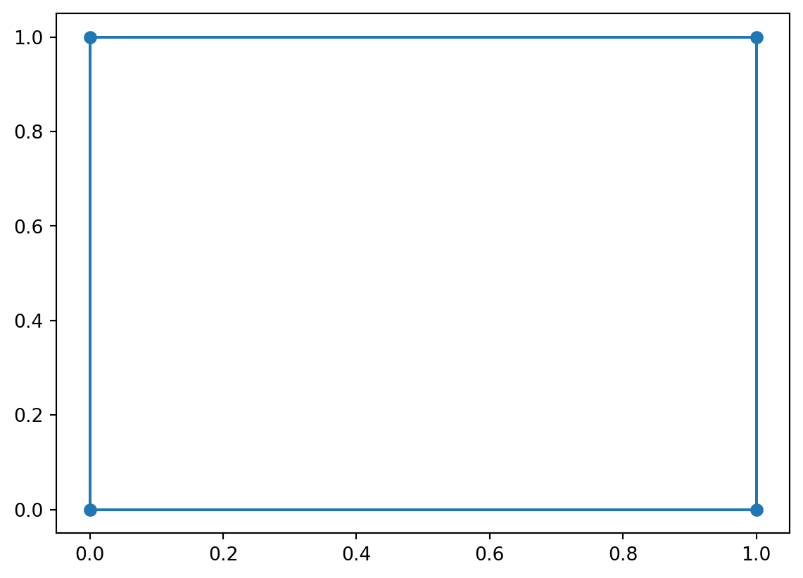

import numpy as np
import matplotlib.pyplot as plt
a = [0,0]
b = [1,1]
ab = np.array([a, b])
abarray([[0, 0],
[1, 1]])The first question we need to ask is “what could it mean for a string to be close to (or far from) another one?” To answer this, let’s consider what it means to be close in other domains.
Suppose we have two numbers \(a, b \in \mathbb{R}\). How might we define the distance between them?
We could compute equality.
\[d_\text{eq}(a, b) = \begin{cases} 0 & \text{if } a = b\\1 & \text{otherwise}\end{cases}\]
Or we could compute the absolute difference.
\[d_\text{abs}(a, b) = |a - b|\]
More generally, we could define a distance on elements of a set \(E\) to be any function \(d: E \times E \rightarrow \mathbb{R}_+\) that satisfies a few constraints:
Measure Theory and General Topology study (in part) functions like \(d\) and more general classes of functions that arise from lifting some of the constraints 1-4. But for our purposes, this notion of a distance is useful.
Now, suppose we have two vectors of real numbers \(\mathbf{a}, \mathbf{b} \in \mathbb{R}^M\)—basically, tuples of real numbers. How might we define the distance between them?
Well, when \(M=2\), that’s just a point in a two-dimensional plane.
import numpy as np
import matplotlib.pyplot as plt
a = [0,0]
b = [1,1]
ab = np.array([a, b])
abarray([[0, 0],
[1, 1]])_ = plt.scatter(ab[:,0], ab[:,1])
We could again check for equality by checking for equality on each dimension.
\[d_\text{eq-vec}(\mathbf{a}, \mathbf{b}) = \begin{cases} 0 & \text{if } d_\text{eq}(a_1, b_1) = 0 \text{ and } d_\text{eq}(a_2, b_2) = 0\\1 & \text{otherwise}\end{cases}\]
Or we could again check for absolute difference, by checking for absolute difference on each dimension and then summing.
\[d_\text{abs-vec}(\mathbf{a}, \mathbf{b}) = d_\text{abs}(a_1, b_1) + d_\text{abs}(a_2, b_2) = |a_1 - b_1| + |a_2 - b_2|\]
This is called the Manhattan (or city block) distance.
_ = plt.plot([a[0], b[0]], [a[1], a[1]])
_ = plt.plot([b[1], b[1]], [a[1], b[1]])
_ = plt.scatter(ab[:,0], ab[:,1])
Or we could compute the Euclidean distance.
\[d_\text{euc}(a, b) = \sqrt{(a_1 - b_1)^2 + (a_2 - b_2)^2}\]
_ = plt.scatter(ab[:,0], ab[:,1])
_ = plt.plot(ab[:,0], ab[:,1])
We could get even fancier by noticing that the absolute difference and Euclidean distance can be generalized—e.g. to the Minkowski \(p\)-norm for some \(p\).
\[d_{\text{mink}, p}(\mathbf{a}, \mathbf{b}) = \sqrt[p]{\sum_i |a_i - b_i|^p}\]
where absolute difference is the case where \(p=1\) and the Euclidean distance is the case where \(p=2\). (And this isn’t even near as fancy as we can get.)
The reason for going through all of this is to notice:
Both of these notions are import for understanding string distance because we can think of strings as vectors—sort of like the vectors we discussed above.
There are two main differences between strings and real-valued vectors though:
To understand how to deal with the these issue, it’s useful to first start with boolean “vectors” because strings are just a generalization of boolean vectors.
A boolean “vector” (I’m say shortly why I include quotes) is some tuple of boolean values \(\mathbf{a} \in \mathbb{B}^M = \{\top, \bot\}^M\). Notice that the case where \(M=2\) gives us the vertices of a square with sides of length 1.
a = [0,0]
b = [0,1]
c = [1,1]
d = [1,0]
abcd = np.array([a, b, c, d])
abcda = np.array([a, b, c, d, a])
_ = plt.plot(abcda[:,0], abcda[:,1])
_ = plt.scatter(abcd[:,0], abcd[:,1])
In the case where \(M=3\), we get a cube; \(M=4\) gives us a tesseract, etc. More generally, we refer to anything of higher dimension than a cube as an \(M\)-hypercube.
So how do we compute distance on boolean vectors? Let’s start with equality: how do we compute it? A natural way is the biconditional:
\(d_{eq}(a, b) = \begin{cases}0 & \text{if } a \leftrightarrow b \\1 & \text{otherwise}\end{cases}\)
This may look backward, but remember that (i) \(d\) is supposed to be a distance, so being equal means having no distance; and (ii) \(d\) has a real-valued codomain (even if it’s range is just \(\{0, 1\}\). Indeed, \(d\) actually just turns out to be isomorphic to XOR, which is just the negation of the biconditional. (It is crucially not equivalent to XOR or the biconditional, because \(d\) has \(\mathbb{R}\) as the codomain and XOR has \(\mathbb{B}\) as its codomain.)
Now that we have a notion of distance for booleans, we can do the same thing we did for the real numbers:
\[d_\text{eq-vec}(\mathbf{a}, \mathbf{b}) = \begin{cases} 0 & \text{if } d_\text{eq}(a_1, b_1) = 0 \text{ and } d_\text{eq}(a_2, b_2) = 0\\1 & \text{otherwise}\end{cases}\]
And notice that if \(M>2\), we can actually just generalize this to:
\[d_\text{eq-vec}(\mathbf{a}, \mathbf{b}) = \begin{cases} 0 & \text{if } \bigwedge_i d_\text{eq}(a_i, b_i) = 0\\1 & \text{otherwise}\end{cases}\]
So now I can say why I’m using quotes around vector. Technically, vectors must have elements that come from a field. If we use the notion of distance and the notion of combining distance mentioned above, we do get a field: the Galois Field. You don’t need to know this, but if I had chosen, say, conjunction for our notion of equality, we would provably not have a field.
So here’s a question: can we similarly define a reasonable distance that acts more like absolute difference? Sure. Instead of asking for strict equality at the vector level, we can count up the distances at the element level.
\[d_\text{abs-vec}(\mathbf{a}, \mathbf{b}) = \sum_i d_\text{eq}(a_i, b_i)\]
This is alternatively known as the Hamming distance.
So here’s why the thing about \(M=2\) being a square, \(M=3\) being a cube, etc. matters: basically what we’re doing here is counting how many sides of the square, cube, etc. we have to travel to get from one point to the other. It’s straightforward to check that this satisfies the distance constraints.
The thing to notice here is that we did perfectly well here without an ordering on the boolean elements because we know when they will be equal: basically, when the biconditional holds. Further, this didn’t force us to only have a 0-1 distance output, since we can count the mismatches.
Okay, so what we wanted to compare variable length boolean vectors? So what if we had a vector \(\mathbf{a} \in \mathbb{B}^2\) and another \(\mathbf{b} \in \mathbb{B}^3\)?
Let’s return to the idea about squares and cubes: \(\mathbf{a}\) would be a vertex of a square while \(\mathbf{b}\) would be a vertex of a cube. But here’s the trick: squares are just one side of a cube. So how can we leverage that?
The basic idea is to ask “what if I thought of \(\mathbf{a}\) as actually denoting a vertex of the cube that \(\mathbf{b}\) is a vertex of? Then, I could compute the distance between the two using whatever distance I already defined.”
Where this gets complicated is in how exactly you decide to “think of” (map) \(\mathbf{a}\) as a cube vertex. Here’s a few ways:
If you’re mapping \(\mathbf{a}\) from \(\mathbb{B}^M\) to \(\mathbb{B}^N\), where \(N>M\), for comparison to \(\mathbf{b} \in \mathbb{B}^N\)…
These all involve choosing a “face” of the higher dimensional thing to compare \(\mathbf{a}\) to \(\mathbf{b}\) on. The first just chooses the same face every time. The second chooses the the face dependent on \(\mathbf{b}\) and will always result in a distance that is no longer than the one computed for the first, but it is not necessarily optimal. The last one will give us the shortest distance possible (by definition), but it is significantly more complicated to compute. You can get a sense for this by considering how many different ways you can spin a cube around to try to match a face.
Of course, we could also go in the other direction, instead of trying to think of \(\mathbf{a}\) as a cube vertex, we could try to think of \(\mathbf{b}\) as a square vertex. This entails “flattening” the cube in some direction. But then the same challenge comes up: which direction do you flatten in? You again basically have the same choices, except that, when you’re deleting instead of adding, 1 and 2 end up looking the same.
But there’s actually a problem with the first way: the direction you choose can give you different answers! This is because the deletion method will give distances that are at most \(M\), whereas the addition method will give distances that are at most \(N\). That’s bad because then you don’t have something that looks like a distance anymore, since remember that \(d(\mathbf{a}, \mathbf{b}) = d(\mathbf{b}, \mathbf{a})\). To fix this, we could always define the distance to only delete or only add, but the problem still remains that methods one and two require us to should what to add arbitrarily.
Method 3 doesn’t turn out to have this directionality problem (as long as either addition and deletion don’t themselves add to the distance or they add the same amount), since you can always select your additions so that the added elements always match. And even if it did, we could back off to always moving from the smaller vector to the larger vector (or vice versa), with whatever penalty structure we wanted.
The problem is figuring out what the best way of inserting or deleting elements is, since regardless of which way you go, you always have \({N \choose N-M}\) possible choices (in the deletion case) and \({M \choose N-M} \times {N \choose N-M}\) in the insertion case (since you need to not only decide where to insert, but always where to insert from). And even in the deletion case, if you consider all of these choices naively, you end up having check for the equality of \(M\) elements, resulting in \({N \choose N-M} \times M\) equality checks.
It turns out there’s a better way, which we’ll see in a second. But first, how does any of this relate to strings?
Everything we just discussed about boolean vectors can be thought of in terms of strings by thinking of boolean vectors as strings from an alphabet with two elements: \(\top\) and \(\bot\). And indeed, Hamming distance (the analogue of absolute difference we talked about earlier) is straightforwardly defined for strings by replacing the element-wise biconditional with element-wise equality.
The reason to go through boolean vectors first is strings built from alphabets with more than two elements are hard to visualize, but the idea is basically the same: when we’ve got strings of different lengths, how do we determine how we should insert and/or delete elements?